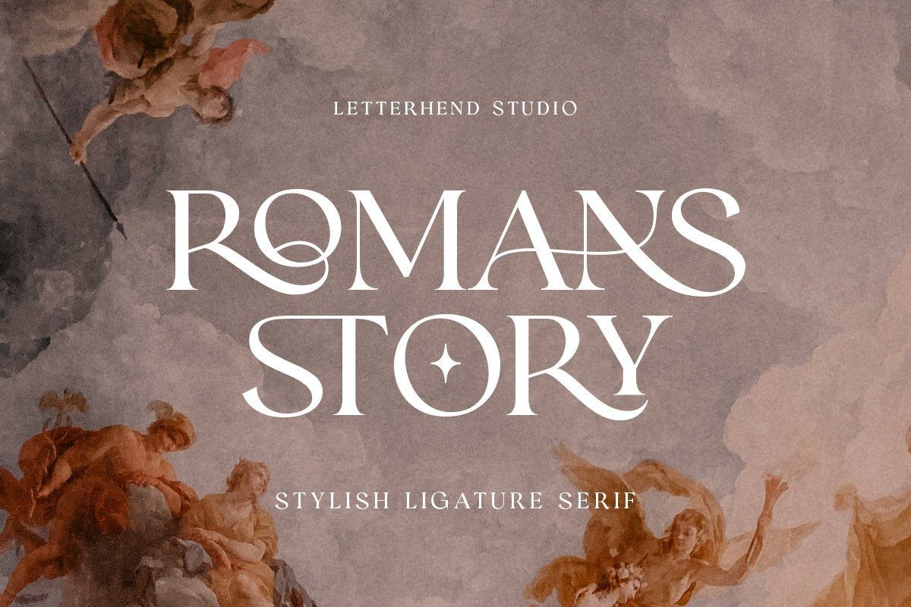

TRENDING ONE
Different Styles Of Lettering
Brush Lettering
Brush lettering is a lettering style that uses a special brush pen in place of the traditional writing instrument. It creates an eye-catching effect by allowing the writer to create letters that switch between thin and thick lines. Many aspiring letter writers find brush lettering to be one of the most accessible and enjoyable ways to begin lettering, as it does not require much specialized knowledge or expensive supplies to start learning. These include brush pens, paper or a sketchbook, and ink. You may also want to invest in an eraser, ruler or straightedge, and colored pencils or markers if you plan on adding color to your work. Finally, having reference materials such as books or online tutorials can help you learn the basics of brush lettering quickly and easily. Brush lettering can be used for everything from creating beautiful invitation cards to adding flair to sketches and color illustrations. Whether you’re a total beginner or a professional, there is something to love about brush lettering for everyone!
Graffiti Lettering
Graffiti lettering is all around us — on train cars, walls, and sidewalks. It is an ever-evolving art form, with its roots firmly entrenched in the 1980s hip hop culture. Graffiti lettering is the art of drawing stylized letters, typically sourced from traditional calligraphy or graffiti alphabets. To create these animated handwritten images, artists break apart and recombine letters to produce dynamic typography that your eyes just can’t avoid! Through clever use of shape, style, color and distortion — usually accompanied by bold outlines and shadows — graffiti artists bring their own unique style to life using spray cans and paint markers. Every piece of artwork they create is unique and is guaranteed to draw the attention of onlookers!
Bounce Lettering
 Bounce lettering is a style of handwriting that appears to move up and down. It is also known as “jumping” or “bouncing” letters because the pen strokes appear to be bouncing off the page as they are being written. This type of calligraphy requires a steady hand and good control over the writing instrument, making it difficult for beginners to master. Bounce lettering can be used for a variety of purposes such as wedding invitations, posters, signs, or even logos. The creative possibilities with bounce lettering are endless! When done correctly, this unique style adds an element of fun and elegance to any piece of artwork.
Bounce lettering is a style of handwriting that appears to move up and down. It is also known as “jumping” or “bouncing” letters because the pen strokes appear to be bouncing off the page as they are being written. This type of calligraphy requires a steady hand and good control over the writing instrument, making it difficult for beginners to master. Bounce lettering can be used for a variety of purposes such as wedding invitations, posters, signs, or even logos. The creative possibilities with bounce lettering are endless! When done correctly, this unique style adds an element of fun and elegance to any piece of artwork.
Blackletter/ Gothic Lettering
 Blackletter/Gothic lettering is an artistic lettering style with a history dating back to the 12th century. It differs from other styles by having one of the more elaborate forms of letter shapes, which tend to be narrow, pointed and elaborate, and they often create striking calligraphic compositions. Their main purpose is to convey a certain visual feel or an atmosphere of seriousness and classical elegance. Some examples of how Gothic lettering is used includes logos, book covers, logotypes and headlines. It’s also popular in the branding of beer labels, music album covers and tattoos. For those who appreciate the clear distinction of its bold classicism, Gothic lettering will never go out of style – especially when creating something that must match a specific feeling or theme.
Blackletter/Gothic lettering is an artistic lettering style with a history dating back to the 12th century. It differs from other styles by having one of the more elaborate forms of letter shapes, which tend to be narrow, pointed and elaborate, and they often create striking calligraphic compositions. Their main purpose is to convey a certain visual feel or an atmosphere of seriousness and classical elegance. Some examples of how Gothic lettering is used includes logos, book covers, logotypes and headlines. It’s also popular in the branding of beer labels, music album covers and tattoos. For those who appreciate the clear distinction of its bold classicism, Gothic lettering will never go out of style – especially when creating something that must match a specific feeling or theme.
Serif Typefaces

Serif typefaces feature subtle flourishes on the ends of characters (think Times New Roman) and straight lines. These fonts are often used in professional documents because they are easy to read at small sizes and have a classic feel. Serif typefaces are great for adding elegance or sophistication to your designs without being overly ornate or flashy.
Digital Lettering
In recent years digital lettering has taken off as it allows artists to create beautiful works from their own homes without having to purchase expensive, specific tools or materials. With the help of various technology tools such as Adobe Photoshop and Illustrator, digital letterers can easily design logos for businesses or create posters for events without having to leave their house! Digital lettering also allows for more experimentation since there are no limits on font sizes or colors—the possibilities are endless!
Different Types of Inks
Whether you’re a calligrapher, letterer, or just someone who loves writing with beautiful pens, you know how important the right ink is to your work. From traditional inks to fountain pen inks, there are so many options for finding the perfect ink for your calligraphy and lettering projects. Let’s take a look at some of the latest trends in different types of ink that are popular among calligraphers and letterers today.
Fountain Pen Inks
 Fountain pen inks are becoming increasingly popular among calligraphers and letterers due to their varying shades of color and smooth flow. Fountain pen inks also come with a variety of different finishes including matte, glossy, shimmery, or metallic. This makes them perfect for creating dynamic pieces with texture and depth. Plus, using fountain pen inks means that you can use any type of fountain pen nib—from extra-fine to extra-broad—with no worries about running out of ink or having it dry out too quickly.
Fountain pen inks are becoming increasingly popular among calligraphers and letterers due to their varying shades of color and smooth flow. Fountain pen inks also come with a variety of different finishes including matte, glossy, shimmery, or metallic. This makes them perfect for creating dynamic pieces with texture and depth. Plus, using fountain pen inks means that you can use any type of fountain pen nib—from extra-fine to extra-broad—with no worries about running out of ink or having it dry out too quickly.
Gouache Inks
Gouache paints have been used as an art medium since ancient times but they are now being used more frequently by modern calligraphers and letterers as well. Gouache paints come in opaque colors which makes them perfect for creating bold artwork with intense color saturation that stands out on paper or other surfaces. They also dry quickly so they’re great for working on projects that require multiple layers of ink without worrying about smudging or smearing.
Ink Sticks & Sumi Inks
If you’re looking for a more traditional approach to calligraphy and lettering, then ink sticks or sumi inks might be just what you need! These types of inks come from east Asia where they were traditionally used to create works on paper and silk fabric. The unique process of grinding down natural materials like tree sap, charcoal, minerals, and beeswax produces an incredibly vibrant black pigment that is highly sought after by both traditional and modern calligraphers alike for its ability to create bold yet precise basic strokes.
Ink plays such an important role when it comes to creating beautiful works of art with calligraphy or lettering – finding the right one can make all the difference! Today’s trendiest types of ink include fountain pen inks for their wide range of colors; gouache paints for their rich opacity; and ink sticks/sumi inks for their traditional roots. With so many amazing options available out there today, it’s never been easier to find the perfect ink for your next project!
home page?